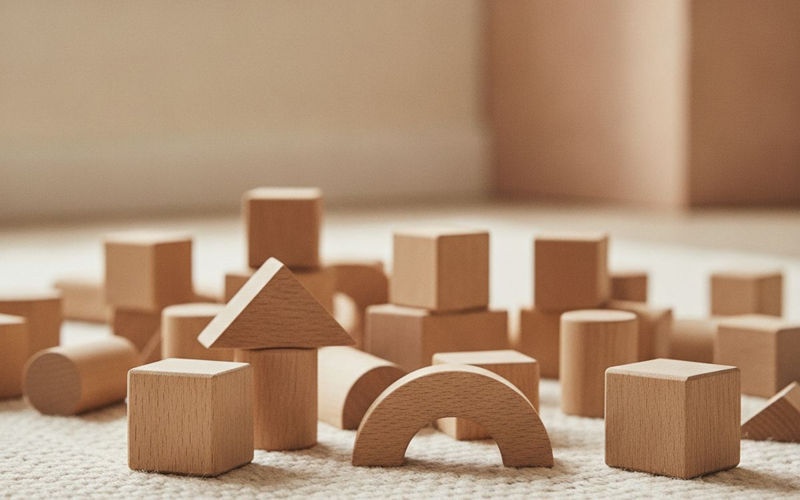
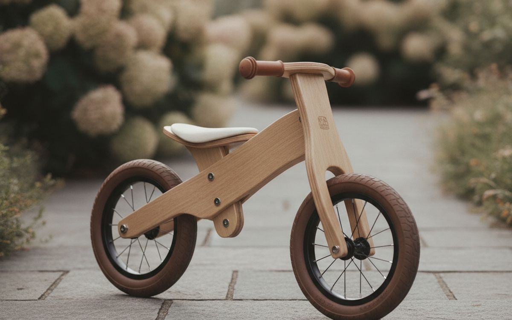
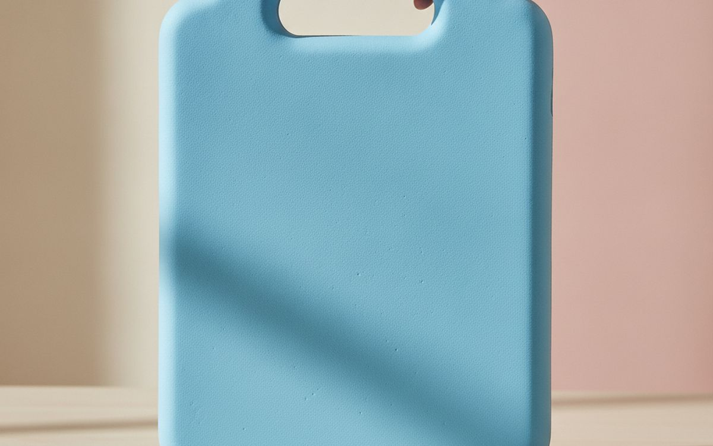
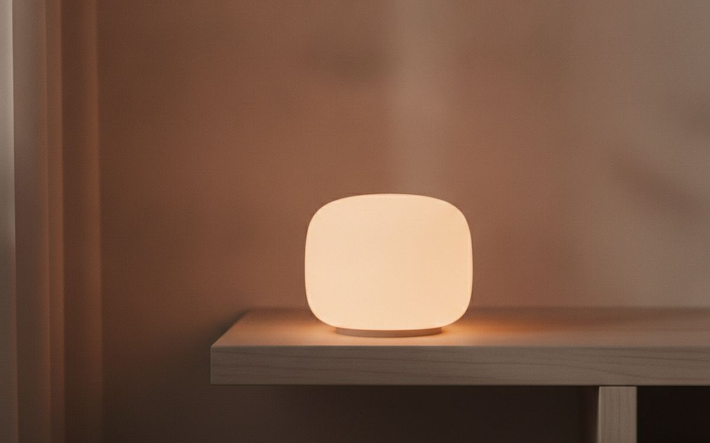
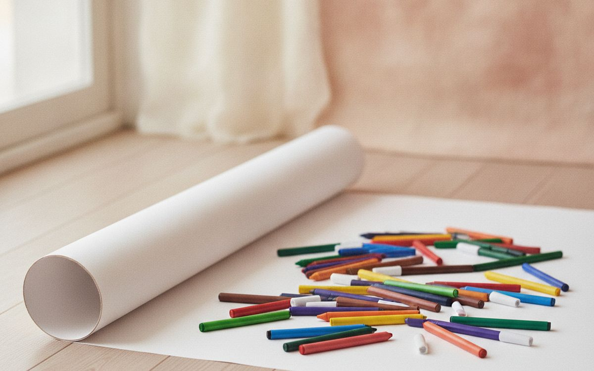
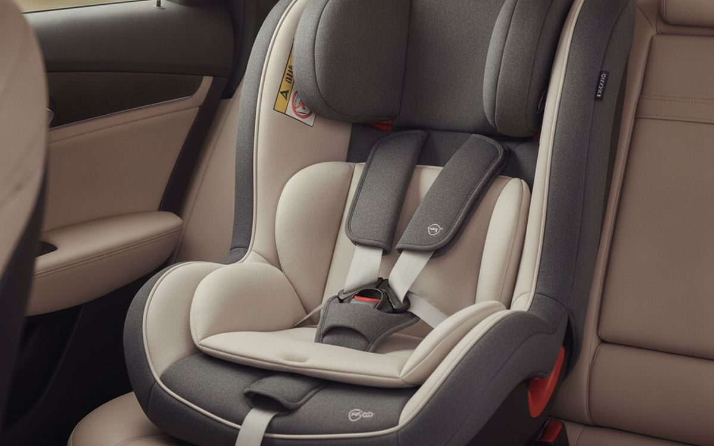
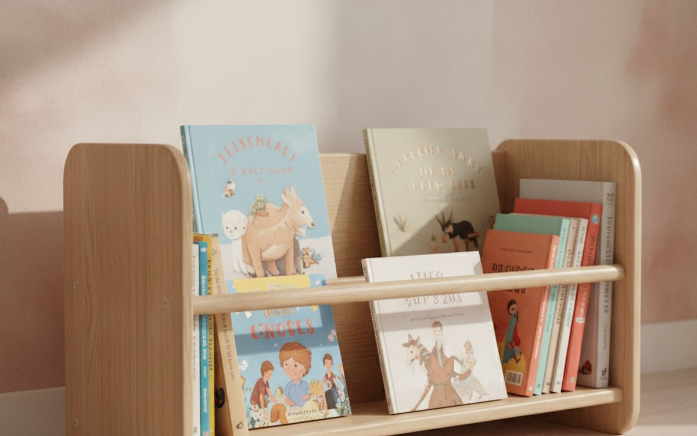
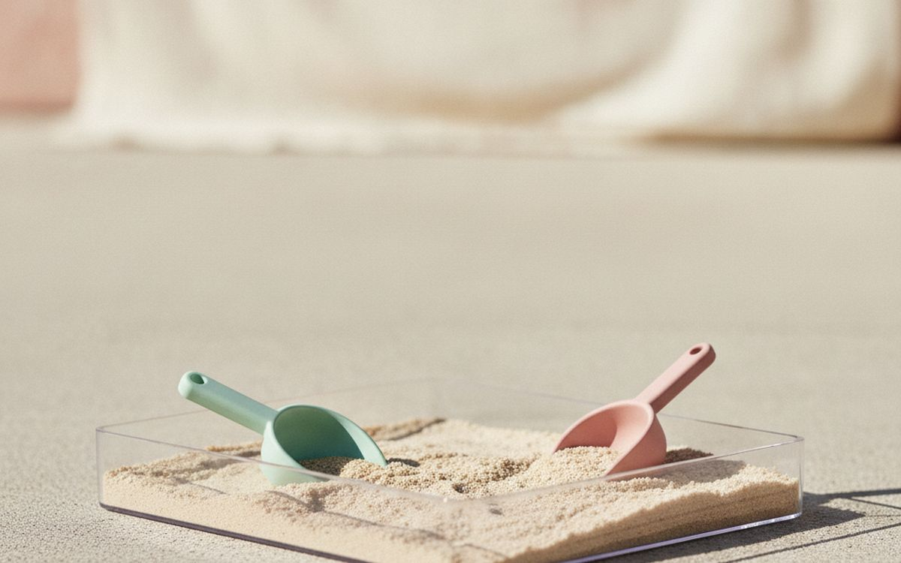
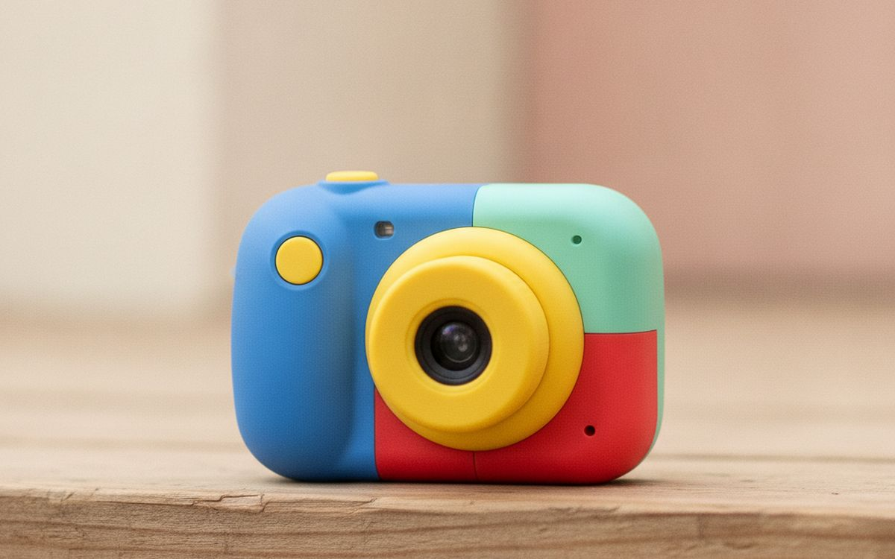
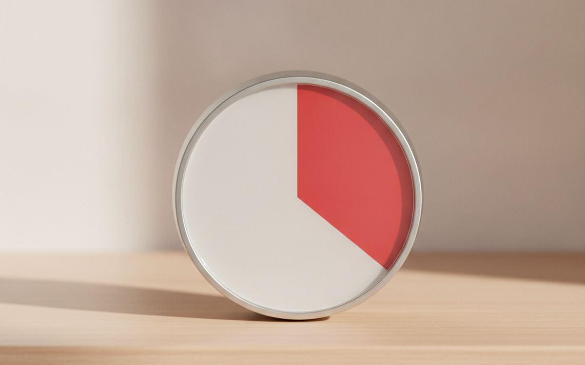

Diez compras que los padres siguen recomendando años después, y las más populares que acaban en el trastero para marzo.
La sección infantil se dirige a padres cansados y esperanzados, una combinación que dificulta comprar con acierto. El resultado es que los artículos con más marketing (los que tienen luces, sonidos y un personaje famoso) son también los que menos tiempo captan la atención de los niños.
El patrón de lo que dura es siempre el mismo: las cosas versátiles que un niño puede usar de veinte maneras distintas ganan a las que solo hacen un truco impresionante. Un juego de bloques de construcción siempre dura más que el juguete que habla.
Dos advertencias de seguridad importantes. Comprueba la clasificación por edad de cualquier cosa con piezas pequeñas y compra a vendedores que publiquen los certificados de seguridad; la categoría infantil es una de las peores en cuanto a falsificaciones con marcas de conformidad falsas o inexistentes. Nada de lo que aquí se dice constituye una recomendación médica o sobre el desarrollo infantil.
Los precios son aproximados en el momento de la publicación. La segunda mano es una opción especialmente buena en esta categoría, ya que la mayoría de las cosas se quedan pequeñas mucho antes de desgastarse.
Aviso. Los enlaces de esta página son de afiliados. Si compras a través de uno podemos ganar una comisión sin coste adicional para ti. No influye en qué entra en esta lista ni en su orden.
Cómo lo elegimos
Damos preferencia a los juguetes versátiles, a las cosas que aguantan un trato duro y a los artículos con un rango de edad de uso prolongado. Nos basamos en las normas de seguridad publicadas, las pruebas de consumo y los informes de padres a largo plazo, y no hemos usado personalmente todos los productos con nuestros propios hijos. Nada de lo que aquí se dice constituye una recomendación médica o sobre el desarrollo infantil, y cuando un producto afirma tener beneficios para el desarrollo, tratamos esa afirmación con escepticismo en lugar de repetirla.
De un vistazo
Los precios son aproximados en el momento de escribir y cambian a menudo.
Las recomendaciones

1
El artículo con la vida útil más larga de toda la listaUn juego grande de bloques de construcción de madera o plástico
$40–90
Los bloques son el ejemplo por excelencia del juego versátil. Un niño de dos años los apila y los derriba, uno de cinco construye un castillo, uno de ocho hace un circuito de canicas, y nada de eso requiere que el juguete cambie. Ese rango de uso es la razón por la que los bloques siguen en el armario cuando el juguete electrónico comprado en las mismas Navidades desapareció hace años. Compra más de los que parezcan necesarios: la queja más común es quedarse sin piezas a mitad de la construcción, lo que acaba con el juego. Un juego sencillo es mejor que uno temático, porque un tema le dice al niño lo que se supone que tiene que ser.
Por qué está aquí
- Útiles desde que son pequeños hasta la primaria
- Nada que romper, nada que cargar
- Mantienen su valor de reventa y se heredan entre hermanos
Conviene saber
- Los juegos pequeños frustran en lugar de entretener
- Pisarlos duele de verdad

2
Mejor que los ruedinesUna bicicleta de equilibrio
$70–150
El equilibrio es la parte difícil de montar en bici, y pedalear es la fácil. Los ruedines enseñan primero la parte fácil e impiden activamente que el niño aprenda a mantener el equilibrio, por eso la transición para quitarlos suele ser un suplicio. Una bicicleta de equilibrio invierte el proceso: los niños aprenden a deslizarse y a girar a su propio ritmo, y luego suelen pasar directamente a una bicicleta de pedales sin ninguna etapa intermedia. Compra una en la que el sillín baje lo suficiente como para que pueda apoyar toda la planta de los dos pies en el suelo; esa única medida determina si un niño con miedo se subirá a ella o no.
Por qué está aquí
- Enseña primero la habilidad que es realmente difícil
- La mayoría de los niños se saltan los ruedines por completo
- Fuerte mercado de segunda mano, tanto para comprar como para vender
Conviene saber
- Se les queda pequeña en unos dos años
- El sillín debe bajar lo suficiente: mídelo

3
Más barata que la pantallaUna funda resistente para la tablet, si es que hay tablet
$25–50
No vamos a entrar en el debate sobre el tiempo de pantalla, que es una decisión de cada familia. Solo observamos que si hay una tablet en casa, una funda de espuma con asa y soporte plegable cuesta una fracción de lo que vale cambiar la pantalla y convierte un objeto que los niños tiran en un objeto que sobrevive a las caídas. El asa es la parte más importante: cambia la forma en que el niño la transporta, pasando de un agarre plano con las dos manos que se resbala a algo que pueden sujetar como un bolso. Comprueba que se ajusta a tu modelo exacto, ya que las fundas genéricas suelen tapar la cámara o algún puerto.
Por qué está aquí
- Cuesta una fracción de lo que vale reparar la pantalla
- El asa de verdad cambia la forma de transportarla
- El soporte plegable evita tener que apoyarla en cualquier cosa
Conviene saber
- Es voluminosa: no cabe en un bolso pequeño
- Los tamaños genéricos tapan las cámaras y los puertos

4
Luz cálida, no azulUna luz de noche en condiciones, con un brillo cálido y regulable
$20–50
Las dos características que hay que buscar son un color cálido y que la intensidad sea de verdad regulable. La luz fría blanco-azulada es la parte del espectro que más nos alerta, que es lo contrario de lo que se necesita en un dormitorio, y una luz con un solo nivel de brillo o es demasiado tenue para tranquilizar o es tan brillante que mantiene a todo el mundo despierto. Una portátil y recargable sirve también para que el niño se la lleve al baño a las 2 de la madrugada, lo que elimina discretamente una negociación nocturna. Evita los modelos que proyectan un cielo estrellado en movimiento si el objetivo es dormir: eso es entretenimiento, y los niños lo tratan como tal.
Por qué está aquí
- La luz cálida y regulable favorece el sueño
- Los modelos portátiles solucionan el viaje al baño de las 2 de la madrugada
- Baratas y duraderas
Conviene saber
- Los modelos con proyector son para entretener, no para ayudar a dormir
- Los LED baratos producen un color desagradable

5
La mejor inversión en horas de entretenimientoMaterial de pintura lavable y un rollo grande de papel
$25–60
Muy pocas compras ofrecen tantas horas de entretenimiento por tu dinero como un rollo de papel y un juego de rotuladores lavables. El rollo es la parte infravalorada: una superficie grande elimina la limitación de una hoja, y los niños dibujan durante mucho más tiempo en algo que no pueden llenar del todo. Insiste en que sean lavables y entiende lo que significa la palabra: normalmente quiere decir que se quita de la piel y de la mayoría de los tejidos, no de un sofá o del papel de pared, así que el rollo cumple también una función protectora. Guárdalo en un lugar que el niño pueda alcanzar sin tener que pedirlo, o lo usará mucho menos.
Por qué está aquí
- Un número enorme de horas de entretenimiento por lo que cuesta
- Una superficie grande mantiene la atención mucho más tiempo
- Sirve para un amplio rango de edades a la vez
Conviene saber
- 'Lavable' no significa que salga de todas las superficies
- Hay que guardarlo al alcance del niño

6
Cómprala nueva y comprueba la normativaUn elevador o silla de coche con buenas reseñas y para la edad correcta
$120–350
Este es el único artículo de la lista que te diremos que no compres de segunda mano. Una silla que ha sufrido un accidente puede tener daños internos que no son visibles, y no puedes verificar el historial que te cuenta un desconocido. Cómprala nueva, comprueba que cumple la normativa regional vigente y confirma que se adapta a tu coche en concreto: el ajuste varía más de lo que la gente espera entre modelos. Y lo más importante, la seguridad reside en la instalación: una silla de precio medio bien instalada protege mejor que una cara mal ajustada. Muchos sitios ofrecen comprobaciones de instalación gratuitas; aprovéchalas.
Por qué está aquí
- El único caso en que la normativa de seguridad vigente es decisiva
- Una instalación correcta importa más que el precio
- Hay muchos sitios que ofrecen revisiones de instalación gratuitas
Conviene saber
- No la compres nunca de segunda mano
- El ajuste varía mucho entre modelos de coche

7
El acceso cambia el usoUna estantería baja y robusta que el niño pueda alcanzar
$50–120
Los libros que un niño puede ver y alcanzar son los que se leen; los libros en una estantería alta se leen cuando un adulto lo decide. Una estantería baja y frontal muestra las portadas en lugar de los lomos, que es como eligen los niños pequeños, y convierte la lectura en algo que pueden empezar por su cuenta. También hace posible que recojan, porque un niño que no llega a la estantería no puede volver a colocar nada en ella. Algo innegociable: anclala a la pared. El vuelco de muebles es una causa bien documentada de lesiones graves en niños pequeños, y toda estantería que se venda para una habitación infantil debería estar sujeta.
Por qué está aquí
- Los niños eligen por las portadas, no por los lomos
- Hace posible que recojan ellos solos
- Barata y dura toda la primaria
Conviene saber
- Debe anclarse a la pared, sin excepción
- Caben menos libros que en una estantería alta

8
La mejor compra para el exteriorUna bandeja de agua o arena poco profunda
$40–90
El juego sensorial con agua o arena mantiene la atención más tiempo que casi cualquier juguete, y funciona para un amplio rango de edades a la vez, lo que es importante si tienes más de un hijo. Una bandeja con patas ahorra dolores de espalda a los adultos en comparación con una piscina infantil en el suelo, y es más fácil de vaciar. Dos puntos de seguridad que vale la pena dejar claros: nunca dejes a un niño pequeño sin supervisión cerca de agua estancada, por poca que haya, y vacía la bandeja después de usarla en lugar de dejarla llena. Además, el agua estancada cría insectos en cuestión de días si hace calor.
Por qué está aquí
- Mantiene la atención más tiempo que la mayoría de los juguetes
- Funciona para varias edades a la vez
- Las patas evitan dolores de espalda a los adultos
Conviene saber
- Nunca dejes a un niño pequeño sin supervisión cerca del agua
- Hay que vaciarla después de cada uso

9
La versión gratuita suele ser mejorUna cámara para niños o un móvil viejo sin la SIM
$0–70
Darle una cámara a un niño cambia su forma de ver un paseo, y las fotografías que traen de vuelta de verdad merecen la pena. Las cámaras diseñadas específicamente para niños son resistentes y sencillas, pero la calidad de imagen suele ser tan mala que la novedad se pasa pronto. Un móvil viejo sin tarjeta SIM y sin cuentas de usuario iniciadas hace fotos mucho mejores, no cuesta nada y casi seguro que tienes uno en un cajón. Ponle una funda resistente, desactiva la conexión a la red y se convierte en una cámara y nada más, que es la versión que la mayoría de los padres realmente quieren.
Por qué está aquí
- Cambia la forma en que un niño mira el mundo
- Un móvil viejo no cuesta nada y hace mejores fotos
- Sin SIM y sin red se convierte en un dispositivo para un solo uso
Conviene saber
- Las cámaras específicas para niños hacen fotos de mala calidad
- Un móvil viejo necesita una funda que sea de verdad resistente

10
Un objeto pequeño, menos discusionesUn temporizador visual
$20–40
Los niños pequeños no tienen un sentido fiable de lo que duran diez minutos, que es la razón principal por la que las instrucciones basadas en el tiempo se convierten en discusiones. Un temporizador que muestra un sector de color que va disminuyendo hace que el tiempo restante sea visible en lugar de abstracto, de modo que el final es algo que el niño puede ver venir en lugar de algo que un adulto anuncia de repente. Es un objeto pequeño y barato que elimina una fricción diaria recurrente: el tiempo de pantalla, lavarse los dientes, recoger, compartir los turnos. Compra uno silencioso para usarlo en el dormitorio; los modelos que hacen tictac son una mala elección para cualquier cosa relacionada con el sueño.
Por qué está aquí
- Hace visible el tiempo abstracto para un niño pequeño
- Elimina una fuente recurrente de discusión
- Funciona para varias rutinas al día
Conviene saber
- Los modelos con tictac no son adecuados para la hora de dormir
- Solo ayuda si se usa de forma sistemática
Preguntas frecuentes
¿Cuál es la compra para niños más sobrevalorada?
Los juguetes electrónicos con luces y sonidos asociados a un personaje famoso. Son más una demostración que una invitación al juego, por lo que el niño mira en lugar de jugar, y la atención se desvanece en cuestión de semanas.
¿Qué merece la pena comprar de segunda mano?
Casi todo, excepto las sillas de coche y los colchones de cuna. A los niños las cosas se les quedan pequeñas mucho antes de que se desgasten, por lo que el mercado de segunda mano está lleno de artículos casi nuevos a una fracción de su precio.
¿Son las bicicletas de equilibrio de verdad mejores que los ruedines?
Para aprender a montar, sí. El equilibrio es la habilidad difícil y los ruedines impiden que el niño la practique. La mayoría de los niños pasan de una bicicleta de equilibrio a una de pedales sin una etapa intermedia.
¿Cómo evito los juguetes falsificados o inseguros?
Compra a vendedores que publiquen los certificados de seguridad, desconfía de los anuncios en 'marketplaces' con precios muy por debajo de lo habitual y comprueba la clasificación por edad. Si las marcas de conformidad del embalaje faltan o están borrosas, es motivo para devolverlo.
← Todas las guías
Como Afiliados de Amazon, ganamos por las compras que cumplen los requisitos. Los precios y la disponibilidad son correctos en la fecha de publicación y pueden cambiar.